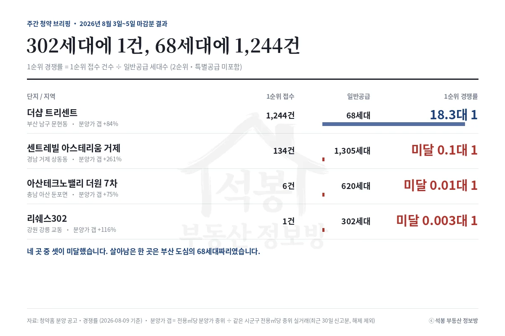
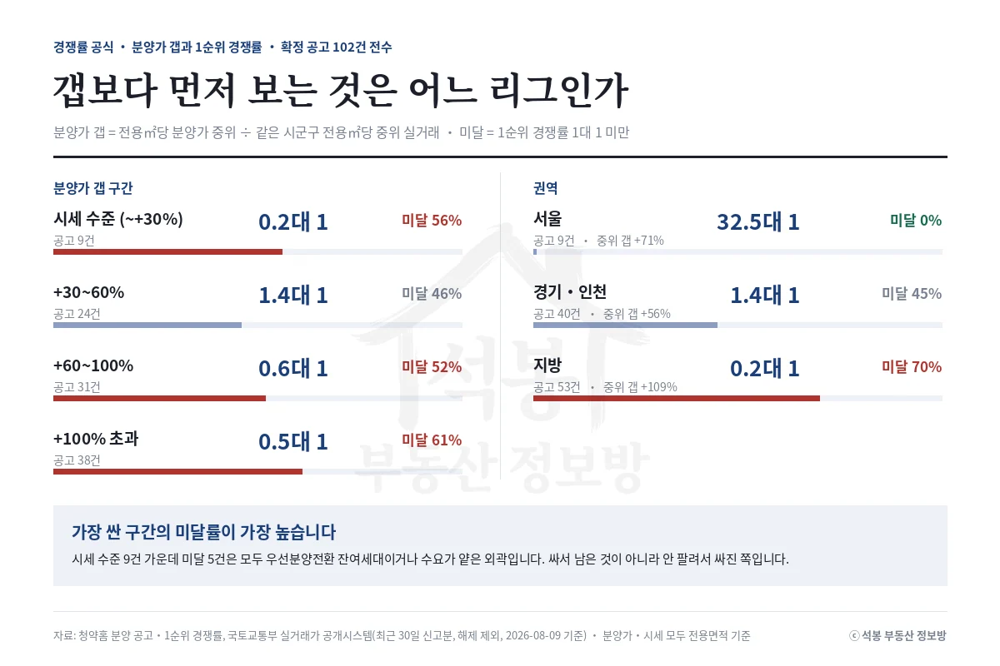
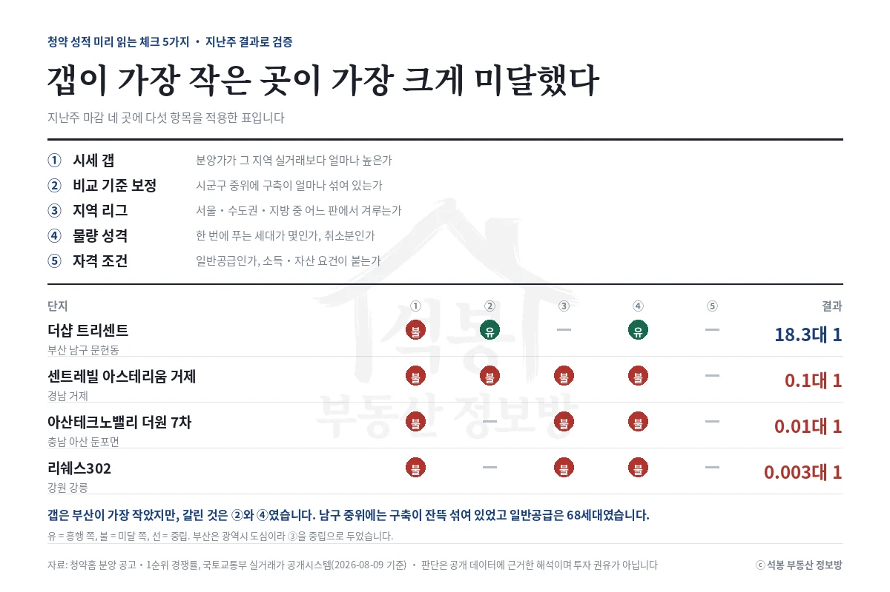
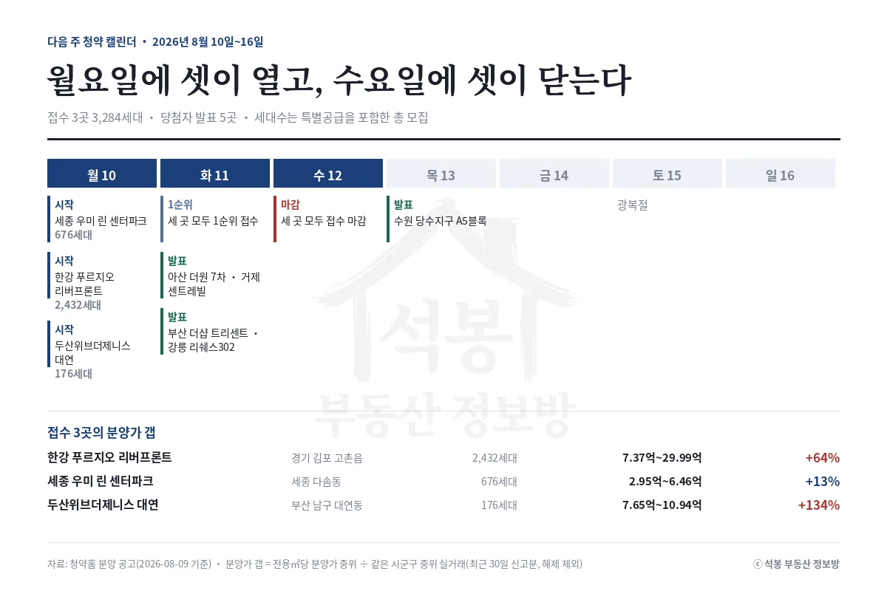

8월 3일에 함께 문을 열었던 네 곳의 결과가 나왔습니다. 셋이 미달했고, 강릉은 302세대 모집에 1순위 접수가 1건이었습니다. 살아남은 한 곳은 부산 문현동으로 68세대에 1,244건이 들어왔습니다. 다음 주에는 월요일 하루에 세 곳이 접수를 시작합니다.
지난주 성적표: 셋은 미달, 하나는 18.3대 1

이 글에서 말하는 경쟁률은 모두 1순위 경쟁률(1순위 접수 건수 ÷ 일반공급 세대수)입니다. 2순위와 특별공급이 빠져 있어 청약홈에 뜨는 총 접수 건수와는 달라 보일 수 있습니다. 분양가 갭은 전용면적당 분양가 중위가 같은 시군구 중위 실거래보다 얼마나 높은지를 뜻합니다.
단지
지역
1순위 접수
일반공급
분양가 갭
1순위 경쟁률
더샵 트리센트
부산 남구 문현동
1,244건
68세대
+84%
18.3대 1
센트레빌 아스테리움 거제
경남 거제 상동동
134건
1,305세대
+261%
0.1대 1 (미달)
아산테크노밸리 더원 7차
충남 아산 둔포면
6건
620세대
+75%
0.01대 1 (미달)
리쉐스302
강원 강릉 교동
1건
302세대
+116%
0.003대 1 (미달)
지난주 이 자리에서 강릉 리쉐스302와 부산 더샵 트리센트, 아산 더원 7차를 "지방 고갭 구간"으로 함께 묶고, 그 구간 성적이 중위 0.4대 1에 미달률 61%였다고 적었습니다. 둘은 그대로 갔고 하나는 크게 빗나갔습니다. 빗나간 쪽을 들여다보는 편이 배울 게 많습니다.
부산 문현동은 부산국제금융센터를 낀 남구 도심입니다. 남구 중위 실거래는 평당 1,779만원(전용 기준)인데, 2018년 이후 준공 단지만 추리면 2,839만원까지 올라갑니다. 분양가는 전용 평당 3,329만원. 남구 전체를 잣대로 삼으면 두 배 가까이 비싼 값이지만, 신축끼리 견주면 +17%로 줄어듭니다. 여기에 일반공급이 68세대뿐이었습니다.
나머지 셋은 반대였습니다. 거제는 갭이 +261%인 상태에서 1,305세대를 한 번에 풀었고, 아산 둔포면과 강릉 교동은 애초에 통장이 몰릴 만한 자리가 아니었습니다. 강릉 리쉐스302는 분양가가 7.82억부터 시작했는데, 전용면적당으로 환산하면 강릉 중위 실거래의 두 배를 넘습니다.
여기서부터는 회원에게 보여드립니다
카카오 로그인 3초면 전문을 읽을 수 있습니다. 무료입니다.
가입하시면 지역 시장조사 보고서(약식)를 2회 무료로 요청하실 수 있습니다.
이미 회원이면 같은 버튼으로 로그인만 됩니다
경쟁률 공식: 가장 싼 구간이 가장 많이 미달했다

분양가와 시세를 함께 볼 수 있고 1순위 경쟁률까지 확정된 공고 102건을 전수로 다시 계산했습니다.
분양가 갭 구간(전용㎡당)
공고 수
1순위 중위 경쟁률
미달 비율
시세 수준 (~+30%)
9
0.2대 1
56%
+30~60%
24
1.4대 1
46%
+60~100%
31
0.6대 1
52%
+100% 초과
38
0.5대 1
61%
싸면 잘 팔린다는 순서가 아닙니다. 시세 수준 구간 아홉 건을 열어 보면 미달 다섯이 군산과 거제의 우선분양전환 잔여세대, 화성 야목역과 용인 양지 같은 얕은 외곽입니다. 싸서 남은 게 아니라 안 팔려서 값이 내려간 쪽이죠. 같은 칸에 57.1대 1로 마감한 안양 에버포레도 함께 들어 있으니 구간 평균이 뒤집힙니다.
권역
공고 수
1순위 중위 경쟁률
미달 비율
중위 분양가 갭
서울
9
32.5대 1
0%
+71%
경기·인천
40
1.4대 1
45%
+56%
지방
53
0.2대 1
70%
+109%
권역으로 나누면 다시 선명해집니다. 서울은 갭 +71%에도 미달이 하나도 없고, 지방은 열 곳 중 일곱이 미달입니다. 갭은 같은 리그 안에서만 통하는 잣대입니다. 서울의 +80%와 지방의 +80%는 같은 숫자가 아닙니다. 부산 문현동처럼 같은 지방 안에서도 광역시 도심은 또 다른 리그입니다.
청약 성적 미리 읽는 체크 5가지

시세 갭, 비교 기준 보정, 지역 리그, 물량 성격, 자격 조건. 지난주 네 곳에 대 보면 결과가 왜 갈렸는지 드러납니다. 갭은 부산이 가장 작았지만 그것만으로 18.3대 1이 나온 게 아닙니다. 거제는 다섯 중 넷이 불리한 자리에서 1,305세대를 풀었습니다. 한 항목만 보고 점치면 자주 틀리는 이유입니다.
다음 주 캘린더: 월요일에 셋이 열린다

8월 10일에 세 곳이 특별공급을 시작해 11일 1순위, 12일에 함께 마감합니다. 세대수는 특별공급을 포함한 총 모집 기준입니다.
단지
지역
총 모집
분양가
분양가 갭
한강 푸르지오 리버프론트
경기 김포 고촌읍
2,432세대
7.37억~29.99억
+64%
세종 우미 린 센터파크
세종 다솜동
676세대
2.95억~6.46억
+13%
두산위브더제니스 대연
부산 남구 대연동
176세대
7.65억~10.94억
+134%
부산 대연동은 18.3대 1이 나온 문현동과 같은 남구입니다. +134%도 남구 전체 중위를 기준으로 삼은 값이라 대연동 신축과 견주면 폭이 크게 줄어듭니다. 발표는 11일에 이번 주 마감한 네 곳이 한꺼번에, 13일에 수원 당수지구 A5블록이 이어집니다.
다음 주 주목 단지: 김포 고촌 2,432세대
세 곳 중 규모가 압도적입니다. 김포 고촌읍은 김포골드라인 고촌역을 끼고 서울 강서구와 맞닿은 자리입니다. 분양가는 전용 평당 3,001만원(전용 기준)으로 김포시 전체 중위 대비 +64%입니다(최근 30일 신고분 기준). 그런데 같은 고촌읍 2024년 준공 고촌센트럴자이와 견주면 답이 달라집니다. 실거래를 기준별로 뜯어본 분석 글을 따로 준비했습니다. 주택형별 분양가와 공급 세대는 입주자모집공고문에서 확인하세요.
원자료: 청약홈 분양 공고·경쟁률(1순위 경쟁률 = 1순위 접수 건수 ÷ 일반공급 세대수, 2순위·특별공급 미포함), 국토교통부 실거래가 공개시스템(분양가 갭의 시세는 같은 시군구 전용면적당 중위 실거래가, 최근 30일 신고분, 해제 건 제외 / 부산 남구 평당 시세는 계약일 기준 최근 6개월, 해제 건 제외, 2026년 8월 9일 기준) · 분양가·시세·평당가는 모두 전용면적 기준 · 분석·제작: 석봉 부동산 정보방 · 본 자료는 정보 제공 목적이며 투자 권유가 아닙니다. 청약 자격과 일정은 청약홈 공고문을 반드시 확인하세요.